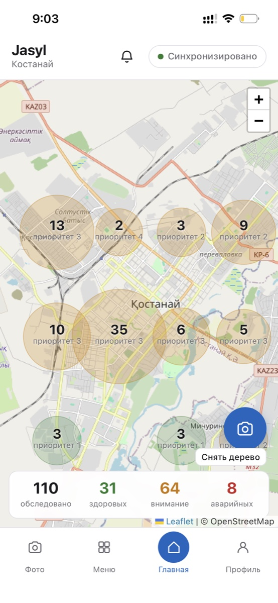

Житель фотографирует дерево, модель определяет состояние, объект встаёт на карту города с инвентарным номером, служба озеленения получает заявку с приоритетом и планом работ. Приложение работает без интернета: снимки копятся на устройстве и уходят сами, когда связь вернётся.
Демо работает без сервера: модель считается прямо в браузере, реестр — на демо-наборе данных. Подробности — в разделе о модели.

Учёт зелёных насаждений ведётся на бумаге и в разрозненных таблицах. Обход выполняет человек с блокнотом, аварийное дерево попадает в план работ уже после того, как ветка упала. Кейс №1 хакатона просил систему, которая переводит этот учёт в цифру и даёт службе озеленения приоритеты.
Заявка появляется после происшествия. Дерево, которое сохло два сезона, никто не считал проблемой, пока оно не упало на тротуар.
Обходы, обращения жителей и планы работ живут в разных местах. Свести их в одну карту и один приоритетный список нечем.
Человек видит опасную ветку каждый день, но канал обращения — звонок, который никуда не привязан географически.
Полный путь данных занимает меньше минуты и не требует от жителя ни регистрации, ни установки приложения из магазина — сервис открывается по ссылке.
Камера и геолокация в момент кадра. Вид дерева житель выбирает сам — породу модель не определяет намеренно.
Фото уходит в инференс-сервис. MobileNetV3 возвращает класс состояния, тяжесть 1–5 и рекомендацию из справочника.
Объект получает инвентарный номер № JSL-000001, встаёт на карту города и в цифровой паспорт с историей осмотров.
Специалист подтверждает или исправляет класс, руководитель видит план работ по срочности и выгружает сводку в Excel.
Не демо одной функции: закрыт весь цикл — от полевой съёмки до документа, который служба озеленения может положить на стол в акимате.
Камера и координаты в момент кадра. Загрузка готового файла из галереи жителю недоступна сознательно: у такого файла нельзя подтвердить место и время.
Сотруднику доступна загрузка до 10 фото за раз: обработка по одному с прогрессом, прерывание не теряет уже обработанное.
На масштабе города точки собираются в кластеры по кварталам, крупный зум разворачивает их в отдельные деревья. Leaflet и OpenStreetMap, без API-ключей.
Инвентарный номер, история обследований, печать в фирменном виде с QR-кодом на точные координаты — открывается прямо в поле.
Детерминированная модель риска: тяжесть состояния × время без осмотра × порода. На выходе — четыре полосы срочности и прогноз последствий бездействия.
Житель, специалист, руководитель. Разграничение — политиками Row Level Security в базе, а не скрытыми кнопками в интерфейсе.
Service Worker, очередь в IndexedDB, три независимых триггера синхронизации — включая ручной, потому что Background Sync не работает в Safari.
Excel и печать одним кликом, без сторонних PDF-библиотек, которые ломаются на кириллице.
Модель не выписывает наряд. Предсказание уходит в очередь на проверку, решение принимает и подписывает человек.
Клиент самодостаточен: он остаётся рабочим при недоступности и модели, и базы — это не аварийный режим, а проектное требование полевого приложения.
Анонимный житель читает реестр и добавляет записи. Менять статус заявки и исправлять класс может только аутентифицированный сотрудник — это политика trees_update_staff на уровне Postgres. Политики DELETE нет ни у кого: муниципальный реестр не должен терять записи по клику.
Каждая запись получает client_uid на клиенте, синхронизация делает upsert по нему — повторная отправка не плодит дубли. Запросы к базе обёрнуты таймаутом: зависший лок обновления токена не превращает приложение в кирпич, экран просто уходит в локальный кеш.
Собственный датасет, собранный и размеченный за два дня хакатона. Ниже — реальные метрики валидации, а не подобранные под слайд.
| Класс | Precision | Recall | F1 | Тяжесть |
|---|---|---|---|---|
| Повреждение ствола | 0,82 | 0,82 | 0,82 | 3 |
| Аварийные ветви | 0,88 | 0,54 | 0,67 | 5 |
| Сухое | 0,43 | 0,75 | 0,55 | 4 |
| Наклон | 0,40 | 0,67 | 0,50 | 4 |
| Болезнь | 0,64 | 0,33 | 0,44 | 2 |
| Здоровое | 0,27 | 0,43 | 0,33 | 1 |
MobileNetV3-Large, дообучение в Google Colab на T4: 8 эпох головы плюс 15 эпох полного fine-tuning, взвешивание классов по частоте, сплит по дереву — не по фотографии, иначе кадры одного объекта попадают и в train, и в val, а метрика становится враньём.
Выбор каждого слоя объяснимый: бесплатно, без ключей, разворачивается за два дня.
| Слой | Технологии | Почему так |
|---|---|---|
| Клиент | Vite · React 18 · TypeScript · React Router | PWA открывается по ссылке — городскому сервису не место в очереди на модерацию в сторе |
| Кроссплатформа | Capacitor 6 (Android, iOS) · Electron 33 (macOS) | Одна кодовая база, нативные камера и геолокация там, где это нужно |
| Карта | Leaflet 1.9 · OpenStreetMap | Бесплатно и без API-ключа — ключ в демо это точка отказа |
| Данные | Supabase — Postgres, Auth, Row Level Security, Storage | Настоящее разграничение прав из коробки, без своего бэкенда |
| Инференс | ONNX Runtime Web (в браузере) · FastAPI · Docker | Та же модель считается прямо на устройстве — демо живёт без сервера и без холодного старта |
| Модель | PyTorch · MobileNetV3-Large · Google Colab (T4) | Лёгкая архитектура: 16,8 МБ и быстрый ответ на бесплатном тарифе |
| Офлайн | Service Worker · IndexedDB · Background Sync и фолбэки | Поле — это не Wi-Fi. Три триггера синхронизации, потому что один не работает в Safari |
| Выгрузка | CSV · window.print() |
Печать браузером вместо PDF-библиотек, которые ломаются на кириллице; CSV Excel открывает нативно |
Визуальный язык намеренно повторяет городской суперапп Smart Qostanai — это аргумент за встраивание сервиса в существующую городскую платформу, а не за ещё одно отдельное приложение.
Три человека и два ноутбука за двое суток. КГУ «Школа-лицей №1 отдела образования города Костаная».
Приложение и кроссплатформенные сборки, обучение модели классификации, инференс-сервис, база данных и разграничение прав, офлайн-синхронизация.
Визуальная часть проекта, оформление материалов и подготовка презентации решения.
Поиск и подбор дизайн-шаблона интерфейса, сбор фотографий для датасета, участие в работе над моделью.
Qostanai Smart City Hackathon, кейс №1 «Интеллектуальная система мониторинга зелёных насаждений», 13–14 августа 2026 года.
Команда Jasyl прошла кейс полностью: от сбора собственного датасета и обучения модели до работающего приложения и документации, по которой проект разворачивается с нуля.